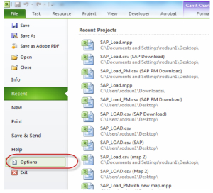

There are some changes you need to do to project to ensure that all duration and scheduling data is copied correctly.
In Project 2010, the options menu item has now been changed to be included in the file ribbon menu.
To ensure that the correct templete is used, always open project through the shortcut provided to your area and not through the Microsoft Programs menu.
Follow these steps.
MS Project Settings
1.1 In Project go to File > Options.

1.2 Within Options, select Schedule.
To save any item as default, you have to select the All New Projects from the drop down list.